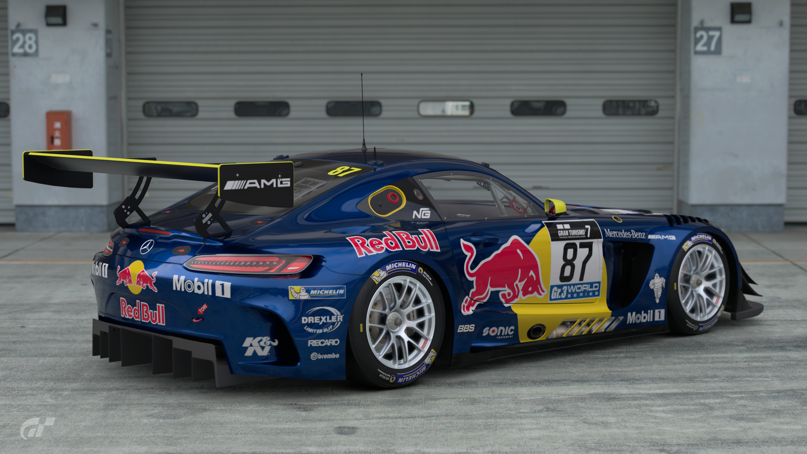

Гонки (автоспорт) — автомобільні змагання на пересіченій місцевості та на шосе й шосейних спорудах різного типу, які проводяться на спортивних, гоночних та серійних автомобілях.
Що таке "Гонки"
Автомобільний спорт є одним з моторних видів спорту. Як і більшість моторних видів спорту автоспорт має багато своїх дисциплін або категорій, які відрізняються умовами та правилами змагань у відповідній дисципліні.Категоризація дисциплін автоспорту є відносно умовною і здійснюється по різному в різних країнах і частинах світу. Найпопулярнішою категорією змагань автомобільного спорту є автомобільні перегони — група дисциплін автомобільного спорту, в яких відбуваються змагання на швидкість проходження відповідної траси перегонів.
Існує також група дисциплін автоспорту, в яких метою змагань не є досягнення мети за найкоротший час, а демонстрація вправності пілота в керуванні автомобілем. До таких дисциплін зокрема відносять дрифт — змагання на видовищність проходження спеціальної траси з заносом автомобіля.

